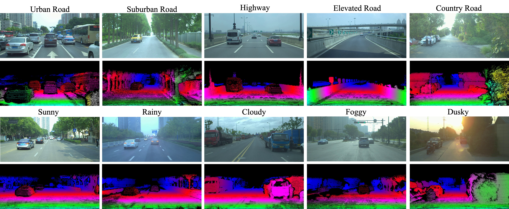
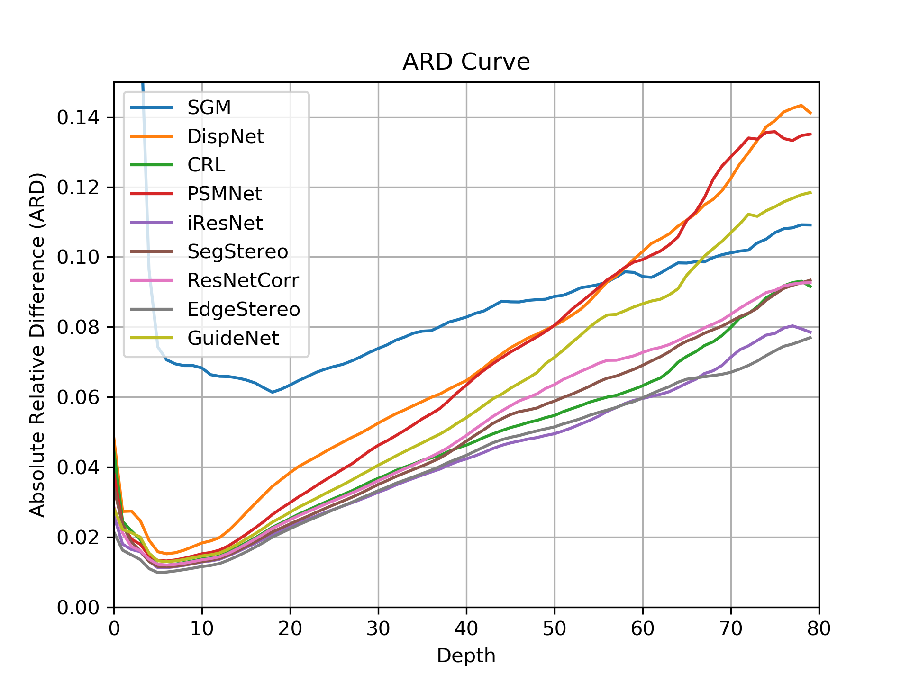
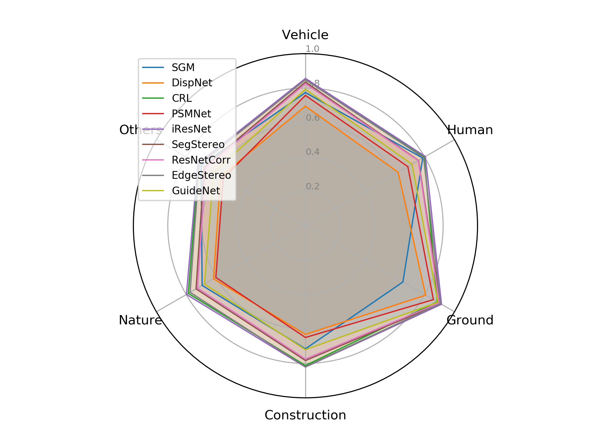

Video
Abstract
Great progress has been made on estimating disparity maps from stereo images. However, with the limited stereo data available in the existing datasets and unstable ranging precision of current stereo methods, industry-level stereo matching in autonomous driving remains challenging. In this paper, we construct a novel large-scale stereo dataset named DrivingStereo. It contains over 180k images covering a diverse set of driving scenarios, which is hundreds of times larger than the KITTI Stereo dataset. High-quality labels of disparity are produced by a model-guided filtering strategy from multi-frame LiDAR points. For better evaluations, we present two new metrics for stereo matching in the driving scenes, i.e. a distance-aware metric and a semantic-aware metric. Extensive experiments show that compared with the models trained on FlyingThings3D or Cityscapes, the models trained on our DrivingStereo achieve higher generalization accuracy in real-world driving scenes, while the proposed metrics better evaluate the stereo methods on all-range distances and across different classes.
Dataset Overview

Real-Scenes
Unlike synthetic datasets, such as FlyingThings3D, MPI Sintel, and Virtual KITTI, our DrivingStereo focus on real-world driving scenarios and build the acquisition platform to collect data.
High Diversity
Our dataset contains a diverse range of driving scenarios, including urban, suburban, highway, elevated, and country roads, together with scenarions under different climates like sunny, rainy, cloudy, foggy, and dusky weathers.
Substantial size
The total frames of our data exceed 180k that are much larger than other real-world datasets including KITTI, Middleburry, and ETH3D, even more than those synthetic datasets like FlyingThings3D, Virtual KITTI, and MPI Sintel.
High-quality labels
The disparity labels in our dataset are projected from LiDAR points and filtered by model-guided strategy.
Results
 
Contact
yangguorun91@gmail.com, songxiao@sensetime.com